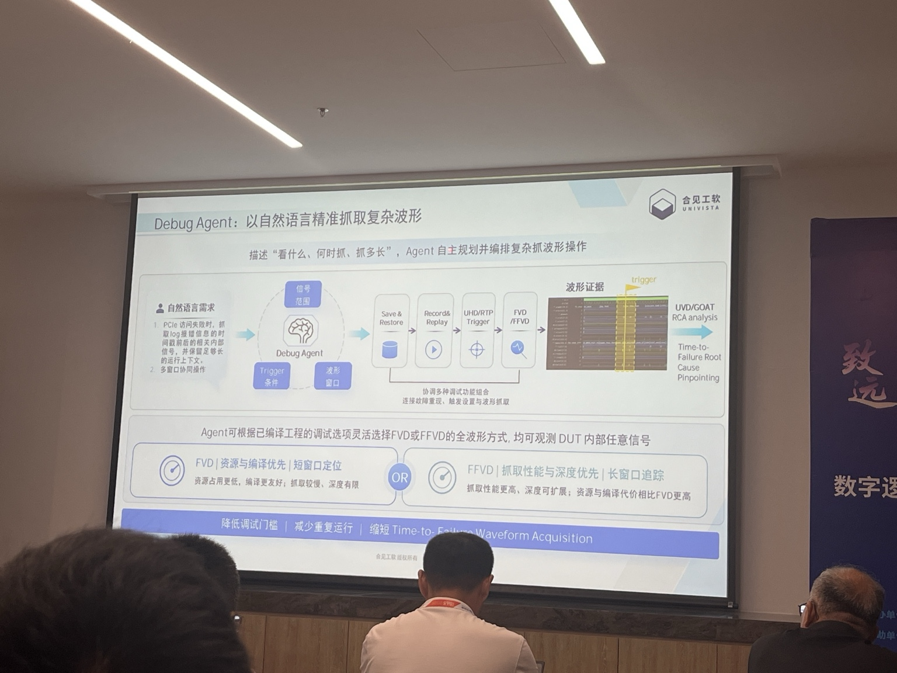
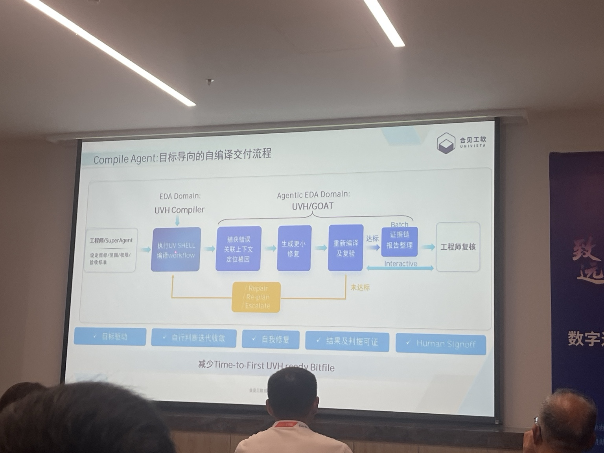
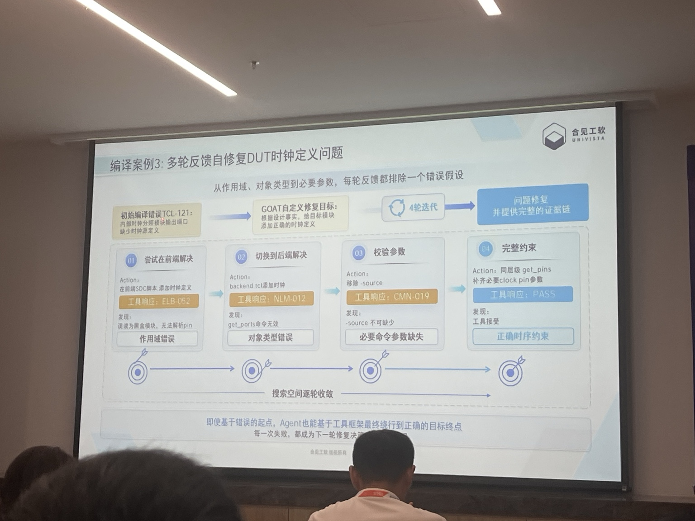
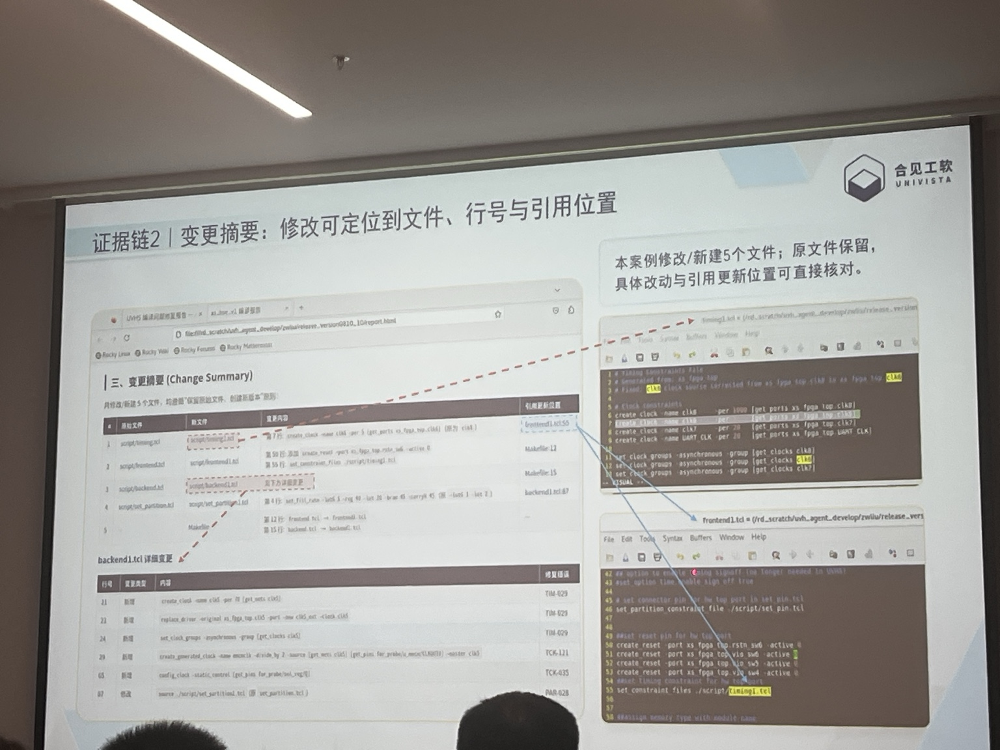
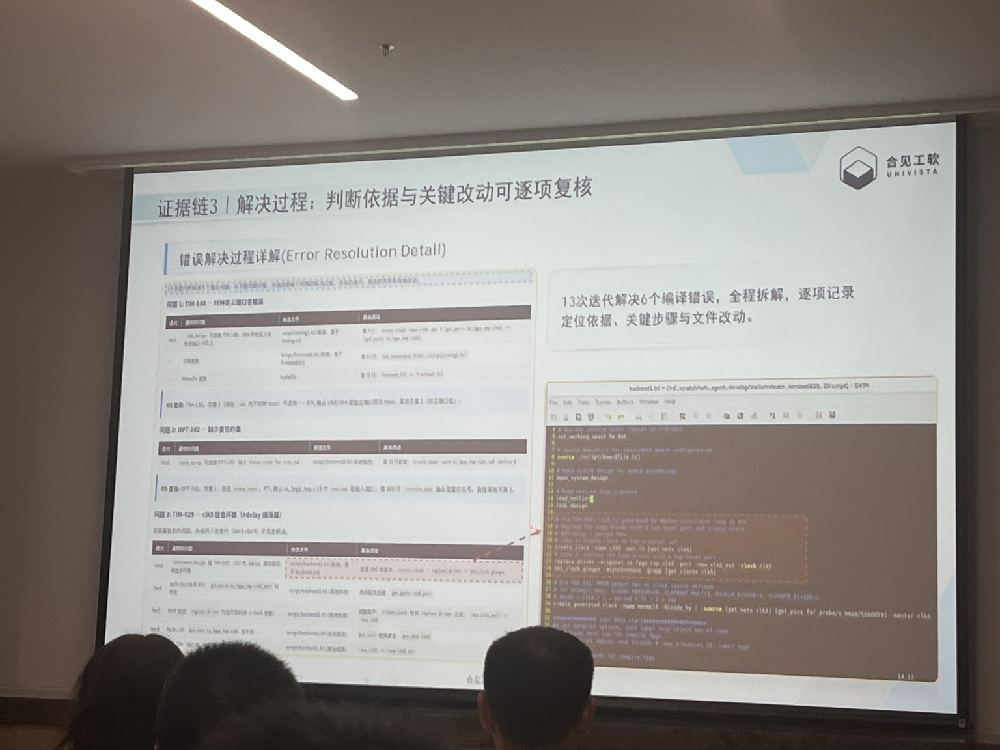
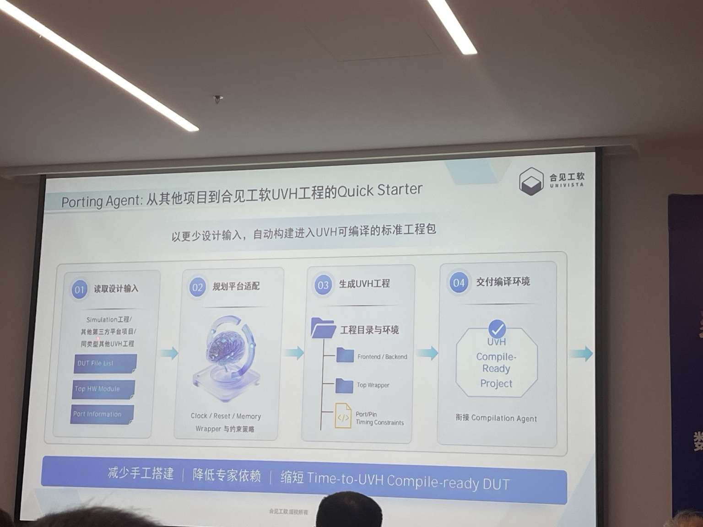
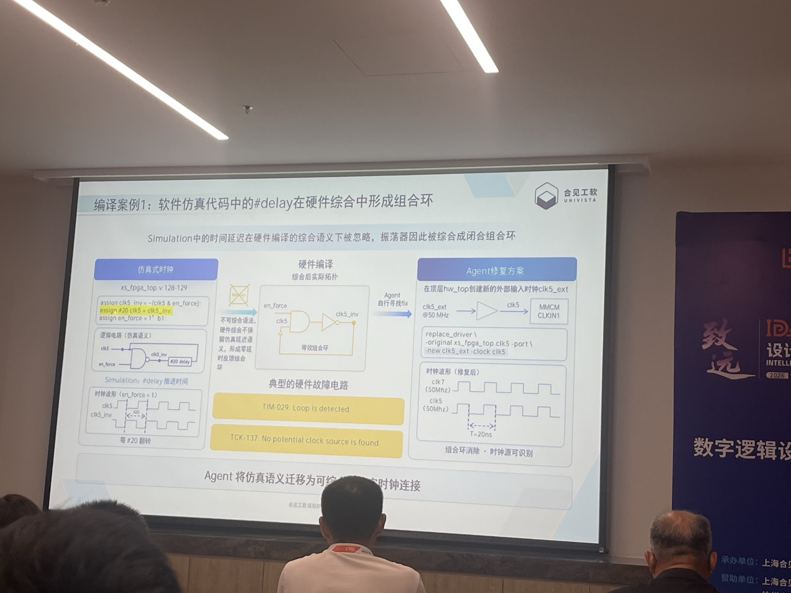
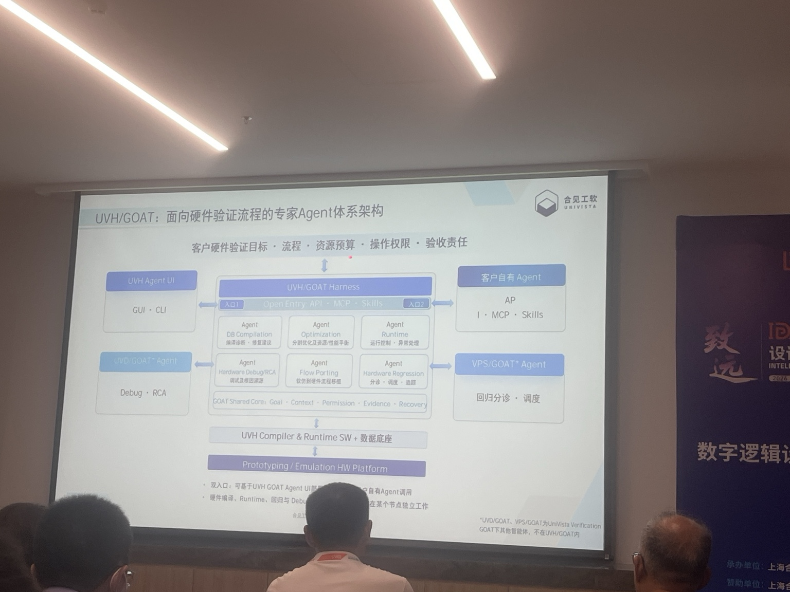

IDAS / VERIFICATION
IDAS 参会：
UVH/GOAT 硬件验证智能体

根据 IDAS 现场分享、录音与拍摄整理。本文只记录现场展示的产品思路和场景选择，不将案例结果视为通用能力或产品评测结论。
这次分享里，比起讨论“智能体能做什么”，更值得记录的是两个具体问题：合见把智能能力放在验证流程的什么位置，以及为什么先从这些场景开始。
一、产品思路：嵌入已有验证流程，而不是另起一套流程
从现场展示看，UVH/GOAT 的切入点是既有的验证工程与工具链。它覆盖的对象包括工程迁移、编译收敛、Runtime、硬件调试/RCA 和 Regression；每个环节对应不同的 Agent 能力，而不是试图用一个通用 Agent 覆盖所有工作。

这里的重点不在“多 Agent”这个形式，而在于 Agent 的输入、可调用工具、工程对象和验收条件都被限定在具体环节中。客户原有的验证目标、资源预算、权限边界和验收责任仍然保留；现场也提到可以接入客户自有 Agent、MCP、Skill 和第三方工具。
可靠性设计也不是只看模型是否“一次答对”。现场的 Compile 案例展示了多轮执行：工具报错、结合上下文做局部修复、重新编译、再根据新的工具反馈调整。模型的路径可以有差异，但最终修改要由真实工具结果验证。

更关键的是，修改、工具输出和复跑结果需要能够继续回查。现场展示中，修改可以定位到具体文件、行号和引用位置；一个案例记录了 13 次迭代、处理 6 个编译错误。这个数字应理解为单一现场案例，而不是一般性能承诺。


因此，现场呈现的闭环是：工具反馈 → 判断与修改 → 工具复跑 → 证据汇总 → 工程师复核。它的作用是让后续审核能够回到工程对象和工具证据，而不是只接受一句“已经修好”。
二、场景选择：先做边界清楚、工具可复验的任务
从案例和路线图反推，合见没有从“自动完成整个芯片验证”这类大目标开始，而是优先选择了几个具备共同特征的任务：
这不是官方给出的场景选择公式，而是从现场展示中可以看到的共同条件。
Porting：工程迁移的验收条件很明确
Porting Agent 的输入是已有 Simulation 工程、第三方平台项目或其他 UVH 工程；它读取 DUT file list、top module、port 等信息，建立 UVH 所需工程，交付 Compile-Ready Project。这个任务不一定最“炫”，但环境配置、脚本修改和经验判断密集，且结果可以直接由下一步编译验证。

Compile Closure：让工具反馈驱动局部收敛
Compile 场景的价值在于有很强的闭环：执行、报错、定位、局部修改、重编译。现场展示了仿真语义中的 #delay 进入硬件综合后形成组合环的案例，也展示了多源时钟场景下为工具补充控制语义的处理。要点不是让 Agent 改变 RTL 功能，而是补齐工程转换所需的配置或语义，使工具能够继续完成转换。

#delay 在硬件综合后形成组合环Runtime 与 Debug：减少流程停顿，缩小调试动作范围
Runtime Agent 面向的是流程中的人工等待：Build 完成后，等待 UART Prompt、发送命令、观察响应并推进测试。这里的价值更接近减少任务在人员之间、班次之间停顿的时间，而不只是替人输入几条命令。
Debug Agent 则接收“看什么信号、什么条件触发、前后抓多少周期”这类调试意图，再组织 Save & Restore、Record & Replay、Trigger、FVD/FFVD 等已有能力。现场提及的约 10 倍效果，同样应理解为分享案例，而不应外推为普遍结果。
三、路线图：先积累可复验任务，再扩展工程记忆
现场 Roadmap 描述的近期重点，是复杂工程下的模型适配、错误修复和交付一致性；中期开始沉淀可验证、可复用的工程记忆，包括任务的适用条件、工具证据和验证结果；长期才延伸到系统级规划和方案级验证能力。

对外部观察者而言，后续更值得跟踪的不是“用了什么模型”，而是这些场景在不同项目、工具版本和客户工程中的通过率、人工介入比例、回退机制和交付一致性。它们决定了这套方法能否从现场案例进入可重复的工程实践。